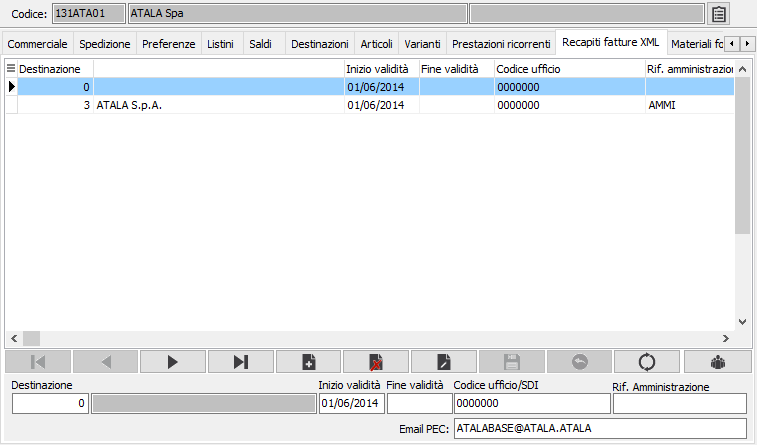

Recapiti fatture XML
La sezione è visibile solo
in presenza del modulo "Fatturazione elettronica"; è possibile
specificare i recapiti necessari per la gestione delle fatture elettroniche.
I
campi Inizio e Fina validità consentono di indicare il periodo di validità
del recapito; il controllo sarà effettuato con la data del documento se
non compresa nel periodo indicato sarà come se il recapito non fosse presente.
Il campo “Rif. Amministrazione”,
indica il codice identificativo del soggetto cedente/prestatore presente
nell’anagrafica del sistema gestionale in uso presso l’Amministrazione.
L’associazione deve essere
effettuata per codice cliente e destinazione merce o destinazione amministrativa.
Nel caso in cui sul documento sia presente sia la destinazione merce che
la destinazione amministrativa sarà utilizzato il codice ufficio previsto
per la sede amministrativa. In fase di elaborazione saranno generati solo
i clienti per cui è stato indicato il recapito.
Per i clienti non enti
pubblici è possibile inserire il Codice SDI e la casella di posta PEC
necessari per la corretta compilazione del file XML.
 Il
pulsante consente la generazione delle destinazioni non presenti, tra
tutte quelle associate al cliente, duplicando i dati Codice ufficio e
Rif. amministrazione dal recapito su cui siamo posizionati. In alternativa
per le destinazioni non caricate saranno utilizzati i dati presenti per
la destinazione 0.
Il
pulsante consente la generazione delle destinazioni non presenti, tra
tutte quelle associate al cliente, duplicando i dati Codice ufficio e
Rif. amministrazione dal recapito su cui siamo posizionati. In alternativa
per le destinazioni non caricate saranno utilizzati i dati presenti per
la destinazione 0.
